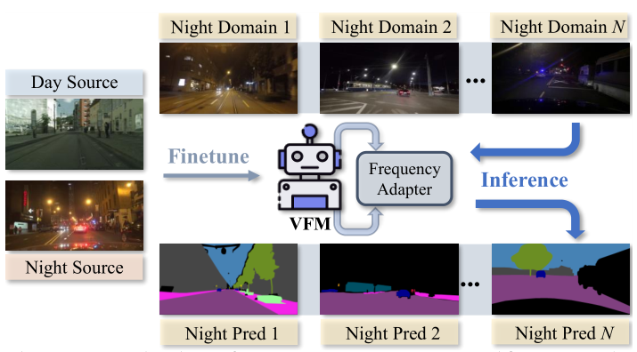
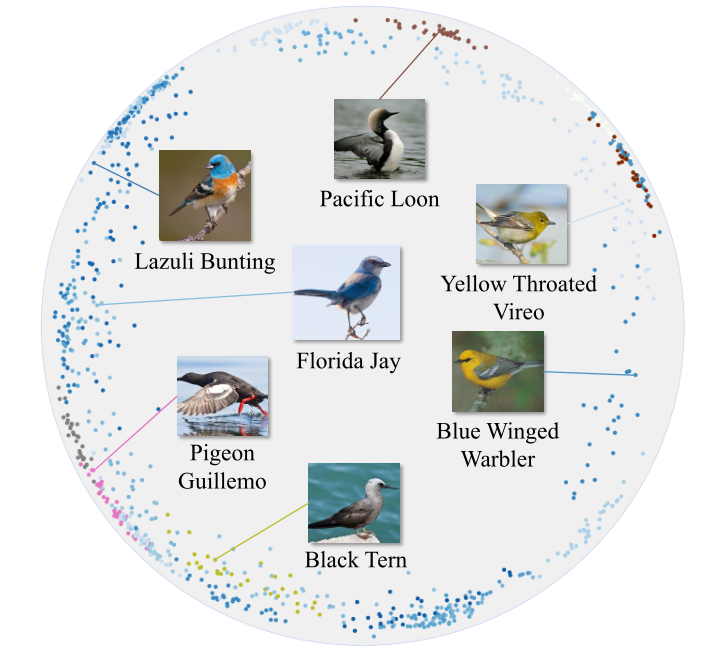
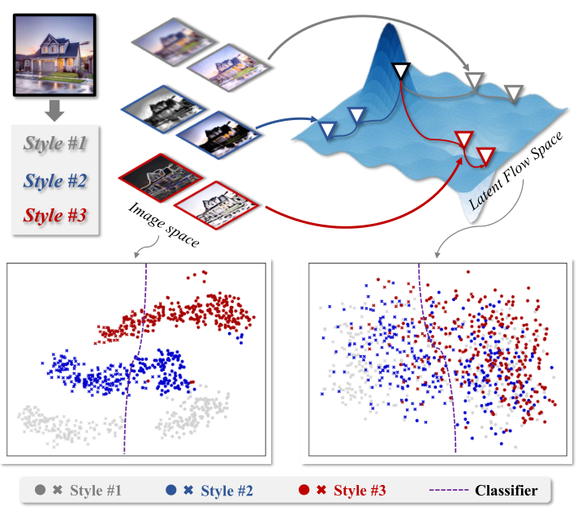
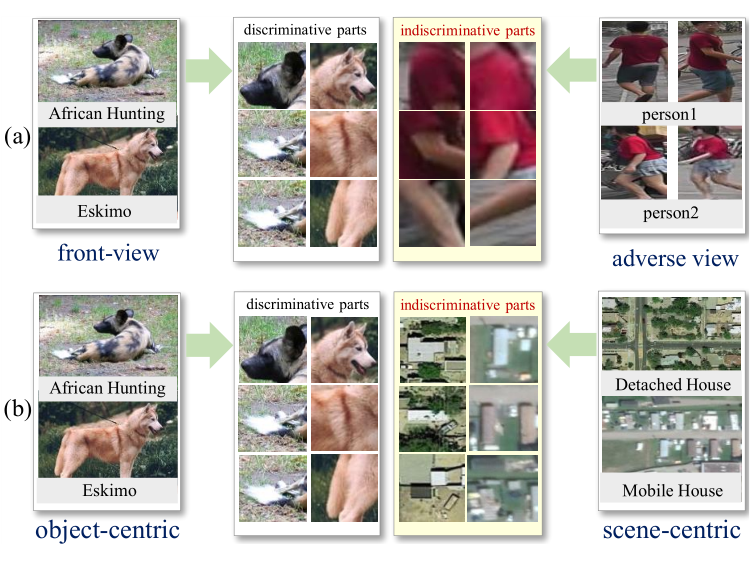
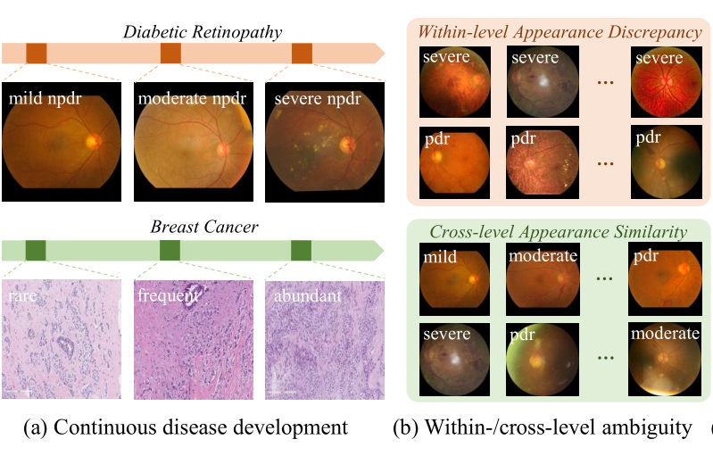
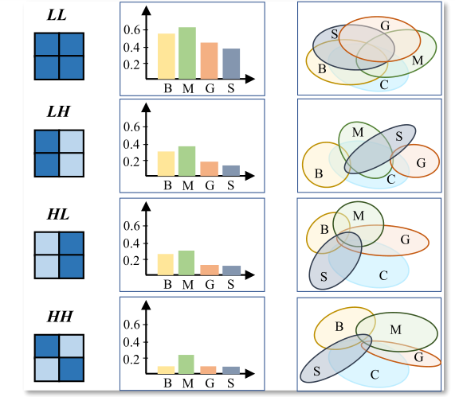
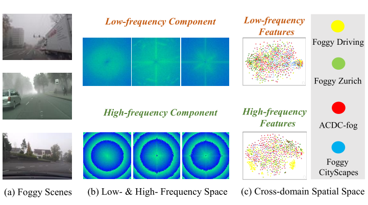
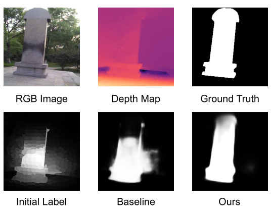
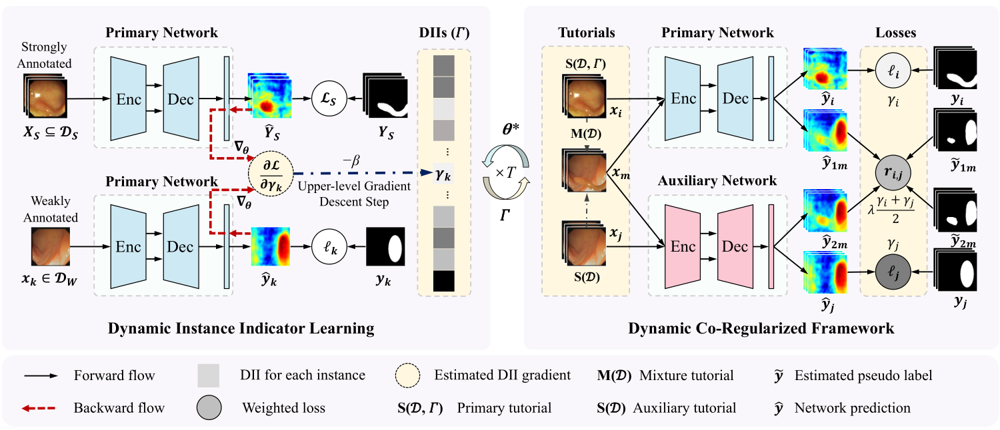

|
Qi Bi He is currently a Postdoc Research Fellow at the Department of Information and Computing Sciences of Utrecht university, advised by Prof. Albert Ali Salah and Prof. Remco Veltkamp. From September 2024 to May 2025, He worked as a lecturer jointly at the faculty of science and the Informatics Institute of University of Amsterdam. He obtained his doctorate degree at the Computer Vision Research Group in University of Amsterdam, promoted by Prof. Theo Gevers and Dr. Shaodi You. Previous to that, He obtained his bachelor (BEng) and master degree (MSc) from Wuhan University in 2017 and 2020, advised by Prof. Kun Qin and Prof. Gui-song Xia. In early 2020, He did research internship at the Jarvis Research Center, Tencent Youtu Lab, led by Dr. Yefeng Zheng. His current research interests include learning inductive bias to handle the distribution shift from various domains & modalities, and multi-modality perception & understanding, with a particular focus on the application of long video/text understanding & generation. In the past five years, his research interests have focused on learning a generalizable representation for visual intelligence, covering multiple application domains such as autonomous driving, remote sensing and medical imaging. Email: q.bi[at]ieee.org; q.bi[at]uu[dot]nl; q_bi[at]whu[dot]edu[dot]cn.Email / CV / Google Scholar / Github / Linkedin |

|
Honors and AwardsAwarded as an outstanding reviewer for CVPR2025 (top 5.6%, 711/12593). Awarded as a top reviewer for NeurIPS2024. Awarded as an outstanding reviewer for BMVC2024 (166/840). Awarded as an outstanding reviewer for International Journal of Computer Vision (IJCV) in the year 2023. Awarded as an outstanding reviewer for CVPR2023 (top 3.3%, 232/7403). Work multi-rater medical image segmentation was shortlisted for CVPR2021 best paper candidate (top 0.46%, 32/7015). Work multi-instance medical image diagnosis was shortlisted for MICCAI2021 travel awards. |
Professional ActivitiesArea Chair for ACM MM (2025), WACV (2026). Regular reviewer for TPAMI, IJCV, TIP (2021-present). Regular reviewer for CVPR, ICCV, ECCV (2021-present). Regular reviewer for NeurIPS, ICML, ICLR (2022-present). Regular reviewer for AAAI, IJCAI, ACM MM (2022-present). IEEE Member with Signal Processing Society. |
ResearchHis research focuses on learning a generalizable representation for visual intelligence, covering multiple application domains such as autonomous driving, medical imaging and aerial imaging. Some representative publications are listed below. |
|  |
NightAdapter: Learning a Frequency Adapter for Generalizable Night-time Scene Segmentation
Qi Bi, Jingjun Yi, Huimin Huang, Hao Zheng, Haolan Zhan, Yawen Huang, Yuexiang Li, Xian Wu, Yefeng Zheng Proceedings of the IEEE/CVF Conference on Computer Vision and Pattern Recognition (CVPR), 2025 code Advancing vision foundation model to domain generalized night-time scene segmentation. The side adapter leverages the discrete sine prior to gain more illumination robustness. |
|  |
Learning Fine-grained Domain Generalization via Hyperbolic State Space Hallucination
Qi Bi, Jingjun Yi, Haolan Zhan, Wei Ji, Gui-Song Xia Proceedings of the AAAI Conference on Artificial Intelligence (AAAI), 2025 code Advancing selective state space model to fine-grained domain generalization by style hallucination in the hyperbolic manifold. |
|  |
DGFamba: Learning Flow Factorized State Space for Visual Domain Generalization
Qi Bi, Jingjun Yi, Hao Zheng, Haolan Zhan, Wei Ji, Yawen Huang, Yuexiang Li Proceedings of the AAAI Conference on Artificial Intelligence (AAAI), 2025 Learning domain generalized selective state space by flow factorization. |
|  |
Universal Fine-Grained Visual Categorization by Concept Guided Learning
Qi Bi, Beichen Zhou, Wei Ji, Gui-Song Xia IEEE Transactions on Image Processing (T-IP), 2025 code dataset Advancing fine-grained visual categorization (FGVC) from object-centric to scene-centric and adverse viewpoints; proposing a fine-grained land-cover dataset (FGLCD); feasible to multiple fine-grained categorization and detection tasks. |
|  |
Samba: Severity-aware Recurrent Modeling for Cross-domain Medical Image Grading
Qi Bi, Jingjun Yi, Hao Zheng, Wei Ji, Haolan Zhan, Yawen Huang, Yuexiang Li, Yefeng Zheng Annual Conference on Neural Information Processing Systems (NeurIPS), 2024 code A Severity-aware Recurrent Modeling method, dubbed as Samba, is proposed for general disease grading within- and cross-domain medical images on three modalities. |
|  |
Learning Frequency-Adapted Vision Foundation Model for Domain Generalized Semantic Segmentation
Qi Bi, Jingjun Yi, Hao Zheng, Haolan Zhan, Yawen Huang, Wei Ji, Yuexiang Li, Yefeng Zheng Annual Conference on Neural Information Processing Systems (NeurIPS), 2024 code A frequency-aware parameter-efficient fine-tuning method, dubbed as FADA, is proposed for domain generalized semantic segmentation. It is feasible to various vision foundation model. |
|
Learning Content-enhanced Mask Transformer for Domain Generalized Urban-scene Segmentation
Qi Bi, Shaodi You, Theo Gevers Proceedings of the AAAI Conference on Artificial Intelligence (AAAI), 2024 code Learning domain generalized scene segmentation by content-enhanced mask attention mechanism. |
|
|  |
Learning Generalized Segmentation for Foggy-Scenes by Bi-directional Wavelet Guidance
Qi Bi, Shaodi You, Theo Gevers Proceedings of the AAAI Conference on Artificial Intelligence (AAAI), 2024 code Learning scene segmentation that can be generalized to arbitrary unseen foggy target domains from only a clear source domain; the first work for this task. |
|
Learning Generalized Medical Image Segmentation from Decoupled Feature Queries
Qi Bi, Jingjun Yi, Hao Zheng, Wei Ji, Yawen Huang, Yuexiang Li, Yefeng Zheng Proceedings of the AAAI Conference on Artificial Intelligence (AAAI), 2024 code Learning domain generalized medical image segmentation by querying from decoupled features; the first work to leverage Vision Transformer for domain generalized medical image segmentation. |
|
|
Interactive Learning of Intrinsic and Extrinsic Properties for All-day Semantic Segmentation
Qi Bi, Shaodi You, Theo Gevers IEEE Transactions on Image Processing (T-IP), 2023 code dataset Learning robust scene semantic segmentation under all-day scenarios; proposing the first all-day semantic segmentation dataset All-day CityScapes. |
|
|
Segment anything is not always perfect: An investigation of sam on different real-world applications
Wei Ji, Jingjing Li, Qi Bi, Wenbo Li, Li Cheng CVPR 1st workshop on Vision-based InduStrial InspectiON, 2023 Best paper award code Benchmarking Segment Anything (SAM) on multiple real-world scenarios. |
|
|  |
Promoting Saliency From Depth: Deep Unsupervised RGB-D Saliency Detection
Wei Ji, Jingjing Li, Qi Bi, Chuan Guo, Jie Liu, Li Cheng International Conference on Learning Representations (ICLR), 2022 code Learning deep unsupervised RGB-D saliency detection, by engaging depth information to improve pseudo-labels in the training process. |
|
All Grains, One Scheme (AGOS): Learning Multi-grain Instance Representation for Aerial Scene Classification
Qi Bi, Beichen Zhou, Kun Qin, Qinghao Ye, Gui-Song Xia IEEE Transactions on Geoscience and Remote Sensing (T-GRS), 2022 code Extending deep multiple instance learning into a multi-grain framework while maintaining the same semantic scheme, dubbed as AGOS; learning discriminative aerial scene representation by AGOS. |
|
|  |
Label-efficient Hybrid-supervised Learning for Medical Image Segmentation
Junwen Pan*, Qi Bi*, Yanzhan Yang, Pengfei Zhu, Cheng Bian * : equal contribution Proceedings of the AAAI Conference on Artificial Intelligence (AAAI), 2022 Learning weakly semi-supervised medical image segmentation by the proposed dynamic instance indicator and dynamic co-regularization framework. |

|
Local semantic enhanced convnet for aerial scene recognition
Qi Bi, Kun Qin, Han Zhang, Gui-Song Xia IEEE Transactions on Image Processing (T-IP), 2021 code Learning aerial scene representation by modeling context-aware class peak response. |
|
Joint semantic mining for weakly supervised RGB-D salient object detection
Jingjing Li, Wei Ji, Qi Bi, Cheng Yan, Miao Zhang, Yongri Piao, Huchuan Lu Advances in Neural Information Processing Systems (NeurIPS), 2021 code dataset Learning weakly-supervised RGB-D salient object detection (SOD) from the image, depth map and image caption; proposing a dataset for caption based SOD dubbed as CapS. |
|
|
Local-global dual perception based deep multiple instance learning for retinal disease classification
Qi Bi, Shuang Yu, Wei Ji, Cheng Bian, Lijun Gong, Hanruo Liu, Kai Ma, Yefeng Zheng Medical Image Computing and Computer Assisted Intervention (MICCAI), 2021 MICCAI2021 travel awards MICCAI2021 young scientist award candidate Learning retinal diseases from fundus images by local-global representation. |
|

|
Learning calibrated medical image segmentation via multi-rater agreement modeling
Wei Ji, Shuang Yu, Junde Wu, Kai Ma, Cheng Bian, Qi Bi, Jingjing Li, Hanruo Liu, Li Cheng, Yefeng Zheng Proceedings of the IEEE/CVF Conference on Computer Vision and Pattern Recognition (CVPR), 2021 Best paper candidate code Learning medical image segmentation from multiple annotations by multi-rater modeling. |

|
A multiple-instance densely-connected ConvNet for aerial scene classification
Qi Bi, Kun Qin, Zhili Li, Han Zhang, Kai Xu, Gui-Song Xia IEEE Transactions on Image Processing (T-IP), 2020 code Modeling discriminative aerial scene representation by deep multiple instance learning. |
SupervisionNoud Corten, Improved Road Crack Severity Measurement Using Deep Convolutional Networks by Storing Spatial Information, November 2021-August 2022 (completed). Carlo Airaghi, Multi-Stage Multiscale Training Architecture for Semantic Segmentation of Remote Sensing Images, April 2021- December 2021 (completed). Silvan Murre, Layout2Land: Semi-Supervised Learning of a Layout and Style Reconfigurable GAN, March 2021-June 2021 (completed). |
Teaching2025 Computer Vision 2 (UvA, Lecturer) 2024 Vision & Autonomous Robotics (UvA, Lecturer) 2024 Computer Vision 1 (UvA, Lecturer) 2024 Computer Vision 2 (UvA, Teaching Assistant) 2023 Computer Vision 1 (UvA, Teaching Assistant) 2023 Computer Vision 2 (UvA, Teaching Assistant) 2022 Computer Vision 1 (UvA, Teaching Assistant) 2021 Computer Vision 1 (UvA, Teaching Assistant) 2020 Computer Vision 1 (UvA, Teaching Assistant) |
|
This website is based on Jon Barron's source code. |